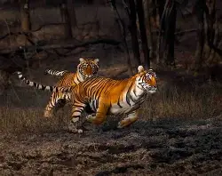

Field StoryEye to Eye with the Bengal Tiger: A Guide to Ranthambore
Tracking the elusive Bengal tiger requires infinite patience, a deep understanding of alarm calls from langurs and deer, and knowing exactly how to position your vehicle for the best cinematic light. Here is my complete, unfiltered guide based on my latest expedition deep into the Indian jungle.
Read Article →